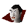
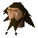
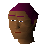
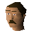
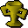
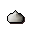
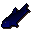
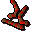

Fishing Contest
Scripts in
scripts/quests/quest_fishingcompo/NPCs involved

A Sinister Stranger
Big Dave
Joshua
MorrisItems involved

Fishing trophy
Garlic
Raw giant carp
Red vine wormInvolvement is derived from identifiers referenced by the quest scripts.